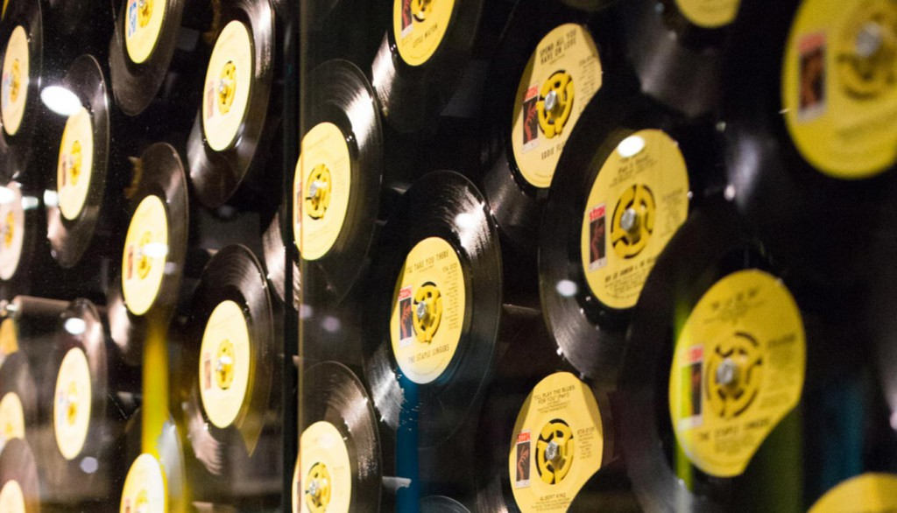

- News
- Museum info
- Story of Stax
- Blog

- Events
- Rebirth of Soulsville
- Shop
- Buy Tickets

Story of Stax
Organized by Memphis’ Stax Records to commemorate the seventh anniversary of the Watts rebellion in Los Angeles, Wattstax was seen by some as the “Afro-American answer to Woodstock”. To make sure everyone who wanted to attend could, tickets were sold for $1 each.

Museum Exhibits
See Stax’s impact in our hall of records and hear the classics – or find new favorites – at our listening station.